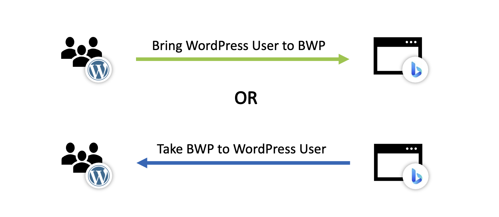

About
Bing URL Submission Plugin for WordPress enables automated submission of URLs from WordPress sites to the Bing index. Once installed and configured with an API key obtained from Bing Webmaster portal, the plugin detects page creation/update in WordPress and automatically submits the URL behind the scenes ensuring that the site pages are always fresh in the Bing index.
Features included in the plugin:
- Toggle the automatic submission feature.
- Manually submit a URL to Bing Index.
- View list of recent URL submissions from the plugin.
- Retry any failed submissions from the recent submissions list.
- Download recent URL submissions for analysis.
This plugin was developed with love and coffee by the Bing Webmaster team.
Going where users are
WordPress is used by 36.1% of all websites and 62.9% of all known CMS according to w3techs By offering an Open Source WordPress Plugin allowing Bing Webmaster Tools URLs submission API, we plan driving adoption increasing BWT contribution to Web Data Content Freshness and allowing other SEO plugins to reuse our Open Source code to integrate URL submission API in other WordPress plugin and other Content Management.
